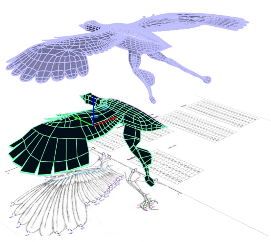
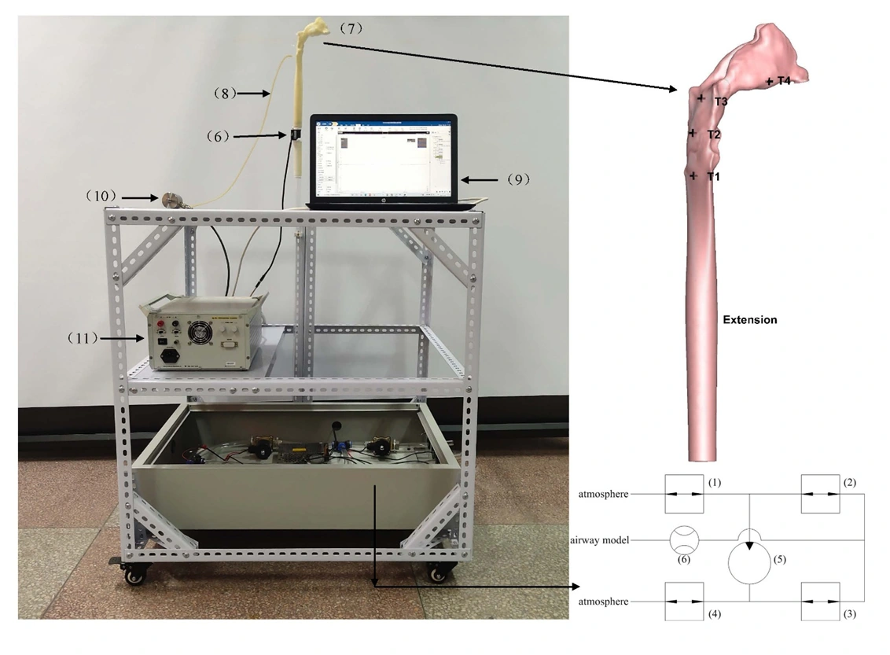
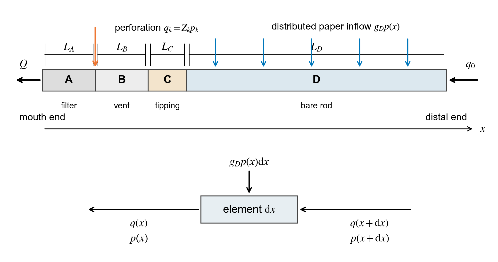

Physics and learning
for complex systems.
Research in computational mechanics and scientific machine learning.
Selected research

Airfoil pitch control
Reinforcement learning for airfoil pitch control in a separated wake.
Physics of Fluids · First-author paper
Generative Reconstruction
Generative reconstruction of coupled flow and deformation from sparse measurements.

Early Bird Flight
Aerodynamic modeling of gliding in the Early Cretaceous bird Confuciusornis.

Biological Flows
Experimental and computational modeling of pediatric upper airway mechanics.
Grand Prize · National College Student Medical Innovation Competition
Tobacco Flow Simulation Software
Simulation of airflow, ventilation, and draw resistance in cigarettes.
Research interests
My research combines physics-based modeling and machine learning to develop computationally efficient methods for understanding, predicting, and controlling complex systems in engineering and the natural sciences.
Explore researchPublication
C. Hu, W. Sun, S. Cao, and J. Wang
Physics of Fluids 38(10), 108103 (2026)